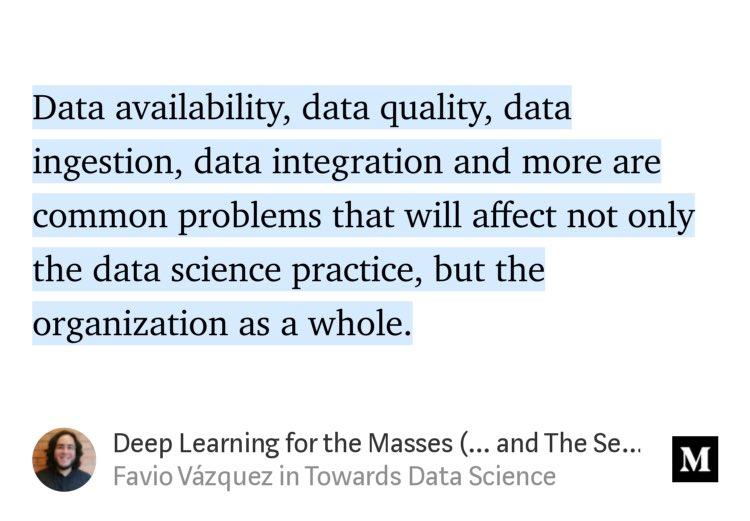

December 2018
”Insightful Machine Learning Comes From Different Data => Start looking internally to identify your unique perspective and the valuable, alternative data you could and should produce. ” Great advice from: @barrylibert @TheMeganBeck HT: @elipapa sloanreview.mit.edu/article/the-ma…
“Deep Learning for the Masses (… and The Semantic Layer)” by @FavioVaz link.medium.com/rrOcCvIb2S

”... you don’t feed the system every known data point in any related field. You feed it a carefully curated set of knowledge, hoping it can learn, and perhaps extend, at the margins, knowledge that people already have.” sloanreview.mit.edu/article/the-ma…
Added a few prefixes while investigating "products"/drugs in a clinical trials context to this excellent list: en.wikipedia.org/wiki/List_of_p…
Issues to consider also for meetings not in an open source context, e.g in companies twitter.com/wesmckinn/stat…
Researching codes/names over the lifecycle of drugs with different stories; in early development, discontinued, acquired, divested, as well as on the market en.wikipedia.org/wiki/Drug_nome… twitter.com/UMCGlobalSafet…
On my list of things to use and learn 2019: #JupyterLab and #vim ping @goude twitter.com/ProjectJupyter…
Awesome. How about ”Why you should treat the *data* you use at work like a colleague”? twitter.com/TEDpartners/st…
Super impressed by @wikidata’s information about chemical compounds eg wikidata.org/entity/Q415159 (rosuvastatin) Would like to learn more in 2019 how it is kept up to date @egonwillighagen @andrawaag
I just signed the #datacentricmanifesto and joined a revolution in enterprise software datacentricmanifesto.org
Clinical trial data reuse internally and externally. Challanges making it possible: ICF reviewing, trial and data cataloging, feeding back results etc. twitter.com/PHUSETwitta/st…